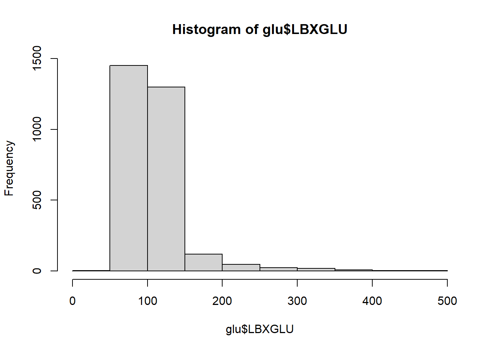

In this script, we will add participants’ metadata, and GLU_index variable based on their blood glucose levels.
Name the path to DietDiveR directory where input files are pulled.
main_wd <- "~/GitHub/DietDiveR"Install the foreign package if it is not installed yet.
if (!require("foreign", quietly = TRUE)) install.packages("foreign")Load the necessary functions.
source("lib/specify_data_dir.R")
source("lib/load_clean_NHANES.R")
source("lib/add_gender_and_age.R")You can come back to the main directory by:
setwd(main_wd)Specify the directory where the data is.
SpecifyDataDirectory(directory.name= "eg_data/NHANES/")Create a folder called “Laboratory_data” under “NHANES”, so that our results with laboratory data (glucose tolerance test) can be saved.
Load the QC-ed total (with food categories), filtered for KCAL, PROT, TFAT, VC. 4,164 people.
QCtotal_d <- read.table("Total_D12_FC_QC_mean_QC_demo.txt", sep="\t", header=T)Check the number of participants in the QCtotals - should be 4,164 people.
length(unique(QCtotal_d$SEQN))## [1] 4164We are going to use the following columns:
RIAGENDR = gender
RIDAGEYR = age
Add gender and age_groups to QCtotal_d_glu_body_meta. The output is named “totals_out”.
AddGenderAgeGroups(input=QCtotal_d, age.col="RIDAGEYR", gender.col="RIAGENDR")Rename the output as QCtotal_d_ga.
QCtotal_d_ga <- totals_out Ensure grouping has been done correctly.
head(QCtotal_d_ga[, c("RIAGENDR", "Gender", "RIDAGEYR", "AgeGroup", "Gender_Age")])## RIAGENDR Gender RIDAGEYR AgeGroup Gender_Age
## 1 1 M 62 60s M_60s
## 2 1 M 53 50s M_50s
## 3 1 M 78 70s M_70s
## 4 1 M 22 20s M_20s
## 5 1 M 56 50s M_50s
## 6 1 M 46 40s M_40sCheck the frequency of the groups. As expected, people aged 18-19 are less frequent.
table(QCtotal_d_ga$Gender_Age) ##
## F_18_19 F_20s F_30s F_40s F_50s F_60s F_70s F_80plus
## 95 344 331 381 344 360 207 138
## M_18_19 M_20s M_30s M_40s M_50s M_60s M_70s M_80plus
## 94 279 309 288 302 340 232 120table(QCtotal_d_ga$AgeGroup) ##
## 18_19 20s 30s 40s 50s 60s 70s 80plus
## 189 623 640 669 646 700 439 258Download the body measure data from NHANES website and save it in “Raw_data” folder.
download.file("https://wwwn.cdc.gov/Nchs/Nhanes/2015-2016/BMX_I.XPT",
destfile= "Raw_data/BMX_I.XPT", mode="wb") Load the body measure data.
bodymea <- read.xport("Raw_data/BMX_I.XPT")Explanation of variables can be found from NHANES.
Relevant variables here include:
| Variable | Description |
|---|---|
| BMDSTATS | Body Measures Component Status Code. 1 == Complete data for age group; 2 == Partial: Only height and weight obtained. |
| BMXHT | Standing Height (cm) |
| BMIHT | Standing Height Comment |
| BMXBMI | Body Mass Index (kg/m2) |
| BMXWAIST | Waist Circumference (cm) |
Add body measure to QCtotal_d.
QCtotal_d_ga_body <- merge(x=QCtotal_d_ga, y=bodymea, by="SEQN")Download the metadata for people, who are in Total Day 1 from the NHANES website, and save it in “Raw_data” folder.
download.file("https://wwwn.cdc.gov/Nchs/Nhanes/2015-2016/DR1TOT_I.XPT",
destfile= "Raw_data/DR1TOT_I.XPT", mode="wb") Load the metadata in Total Day 1.
metadata_raw <- read.xport("Raw_data/DR1TOT_I.XPT")Total Day 1 has “dietary data for day 1” and “metadata”, but we only need the metadata; thus, take out only the metadata columns (variables) and exclude the day 1 data. Column names’ descriptions can be found here on the NHANES 2015-16 page.
First, specify the first and the last column names to select.
Look for the column number that matches the first and last variable specified.
sta_col_num_a <- match("DBQ095Z" , names(metadata_raw)) # Salt-related questions
end_col_num_a <- match("DRQSPREP" , names(metadata_raw))
sta_col_num_b <- match("DRQSDIET" , names(metadata_raw)) # Diet-related questions
end_col_num_b <- match("DRQSDT91" , names(metadata_raw))
sta_col_num_c <- match("DRD340" , names(metadata_raw)) # Fish-related questions
end_col_num_c <- match("DRD370V" , names(metadata_raw))Only select the metadata variables and SEQN, which is in column 1.
metadata_only <- metadata_raw[, c(1,
sta_col_num_a:end_col_num_a,
sta_col_num_b:end_col_num_b,
sta_col_num_c:end_col_num_c
)]Check that this has only the SEQN and metadata columns.
colnames(metadata_only)## [1] "SEQN" "DBQ095Z" "DBD100" "DRQSPREP" "DRQSDIET" "DRQSDT1"
## [7] "DRQSDT2" "DRQSDT3" "DRQSDT4" "DRQSDT5" "DRQSDT6" "DRQSDT7"
## [13] "DRQSDT8" "DRQSDT9" "DRQSDT10" "DRQSDT11" "DRQSDT12" "DRQSDT91"
## [19] "DRD340" "DRD350A" "DRD350AQ" "DRD350B" "DRD350BQ" "DRD350C"
## [25] "DRD350CQ" "DRD350D" "DRD350DQ" "DRD350E" "DRD350EQ" "DRD350F"
## [31] "DRD350FQ" "DRD350G" "DRD350GQ" "DRD350H" "DRD350HQ" "DRD350I"
## [37] "DRD350IQ" "DRD350J" "DRD350JQ" "DRD350K" "DRD360" "DRD370A"
## [43] "DRD370AQ" "DRD370B" "DRD370BQ" "DRD370C" "DRD370CQ" "DRD370D"
## [49] "DRD370DQ" "DRD370E" "DRD370EQ" "DRD370F" "DRD370FQ" "DRD370G"
## [55] "DRD370GQ" "DRD370H" "DRD370HQ" "DRD370I" "DRD370IQ" "DRD370J"
## [61] "DRD370JQ" "DRD370K" "DRD370KQ" "DRD370L" "DRD370LQ" "DRD370M"
## [67] "DRD370MQ" "DRD370N" "DRD370NQ" "DRD370O" "DRD370OQ" "DRD370P"
## [73] "DRD370PQ" "DRD370Q" "DRD370QQ" "DRD370R" "DRD370RQ" "DRD370S"
## [79] "DRD370SQ" "DRD370T" "DRD370TQ" "DRD370U" "DRD370UQ" "DRD370V"Add meatadata to QCtotal_d_glu_body.
QCtotal_d_ga_body_meta <- merge(x=QCtotal_d_ga_body, y=metadata_only, by="SEQN")Save as a .txt file. This can be used for answering research questions other than glycaemic index.
write.table(QCtotal_d_ga_body_meta, "Total_D12_FC_QC_mean_QC_demo_ga_body_meta.txt",
sep="\t", row.names=F, quote=F)Download the blood glucose data from NHANES website, and save it in “Raw_data” folder.
download.file("https://wwwn.cdc.gov/Nchs/Nhanes/2015-2016/GLU_I.XPT",
destfile= "Raw_data/GLU_I.XPT", mode="wb") Load the blood glucose data and see.
glu <- read.xport("Raw_data/GLU_I.XPT")glu has LBXGLU - Fasting Glucose (mg/dL).
head(glu)## SEQN WTSAF2YR LBXGLU LBDGLUSI
## 1 83733 54722.34 101 5.59
## 2 83734 25471.09 84 4.66
## 3 83736 38179.51 84 4.66
## 4 83737 25800.85 107 5.93
## 5 83741 108751.29 95 5.27
## 6 83743 52877.26 97 5.38Check its distribution.
hist(glu$LBXGLU)
Add glu to QCtotal_d_ga_body_meta.
QCtotal_d_ga_body_meta_glu <- merge(x=QCtotal_d_ga_body_meta, y=glu, by="SEQN")| GLU_index | Criteria |
|---|---|
| Normal | 99 mg/dL or lower |
| Prediabetic | 100 to 125 mg/dL |
| Diabetic | 126 mg/dL or higher |
If LBXGLU is missing, put “NA”; if it has a value, add GLU_index category in “GLU_index” column.
QCtotal_d_ga_body_meta_glu$GLU_index <- ifelse(
# test sentence
is.na(QCtotal_d_ga_body_meta_glu$LBXGLU) == TRUE,
# if LBXGLU is NA, put NA to GLU_index column.
NA,
# Otherwise, put "Normal", "Prediabetic" or "Diabetic" to GLU_index column.
ifelse(QCtotal_d_ga_body_meta_glu$LBXGLU < 100,
"Normal",
ifelse(QCtotal_d_ga_body_meta_glu$LBXGLU < 126,
"Prediabetic",
"Diabetic"))
)Check the first 30 rows of glucose and GLU_index columns in QCtotal_d_glu_body_meta.
QCtotal_d_ga_body_meta_glu[1:30, c("LBXGLU", "GLU_index")]## LBXGLU GLU_index
## 1 101 Prediabetic
## 2 84 Normal
## 3 84 Normal
## 4 107 Prediabetic
## 5 95 Normal
## 6 130 Diabetic
## 7 284 Diabetic
## 8 398 Diabetic
## 9 95 Normal
## 10 97 Normal
## 11 97 Normal
## 12 111 Prediabetic
## 13 113 Prediabetic
## 14 114 Prediabetic
## 15 94 Normal
## 16 92 Normal
## 17 119 Prediabetic
## 18 94 Normal
## 19 101 Prediabetic
## 20 104 Prediabetic
## 21 105 Prediabetic
## 22 105 Prediabetic
## 23 109 Prediabetic
## 24 99 Normal
## 25 79 Normal
## 26 97 Normal
## 27 90 Normal
## 28 NA <NA>
## 29 99 Normal
## 30 89 NormalThere are some missing data, so check the frequency with useNA argument to show NAs.
table(QCtotal_d_ga_body_meta_glu$GLU_index, useNA="always")##
## Diabetic Normal Prediabetic <NA>
## 287 788 848 88Select individuals that have no missing data in the LBXGLU column.
QCtotal_d_ga_body_meta_glu_comp <- QCtotal_d_ga_body_meta_glu[!is.na(QCtotal_d_ga_body_meta_glu$LBXGLU), ]Check the number of rows - should have 1,923 rows.
nrow(QCtotal_d_ga_body_meta_glu_comp)## [1] 1923Double-check there is no missing data in GLU_index.
table(QCtotal_d_ga_body_meta_glu_comp$GLU_index, useNA="always")##
## Diabetic Normal Prediabetic <NA>
## 287 788 848 0There may be some participants following special diets such as low-sodium or gluten-free. Detailed explanation about the special diet question can be found on the documentation.
For this demonstration, we will select only those who are eating freely without following any diet.
Check the number of individuals who are following any specific diet (DRQSDIET==1).
table(QCtotal_d_ga_body_meta_glu_comp$DRQSDIET, useNA="always")##
## 1 2 <NA>
## 313 1610 0DRQSDIET==1 is following a special diet, so select only rows with DRQSDIET==2.
QCtotal_d_ga_body_meta_glu_comp_2 <- subset(QCtotal_d_ga_body_meta_glu_comp, DRQSDIET == 2)How many people remained? – 1,610 remained.
table(QCtotal_d_ga_body_meta_glu_comp_2$DRQSDIET)##
## 2
## 1610Check the sample size of each category.
table(QCtotal_d_ga_body_meta_glu_comp_2$GLU_index, useNA="always")##
## Diabetic Normal Prediabetic <NA>
## 208 679 723 0Save the dataset as a .txt file in the folder called “Laboratory_data”.
write.table(QCtotal_d_ga_body_meta_glu_comp_2, file="Laboratory_data/QCtotal_d_ga_body_meta_glu_comp_2.txt",
sep= "\t", row.names=F, quote= F)Come back to the main directory before you start running another script.
setwd(main_wd)